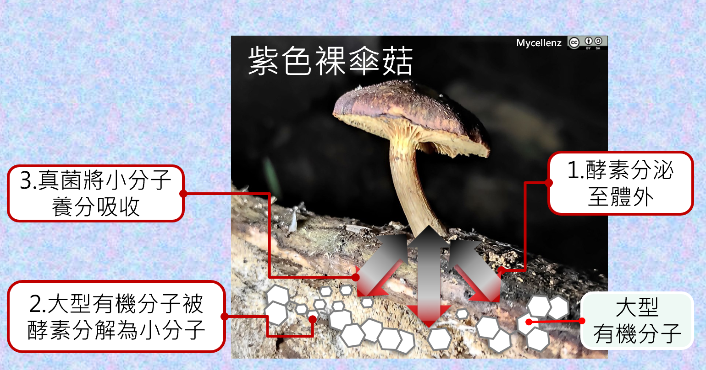
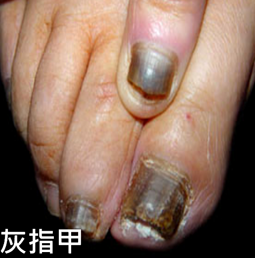
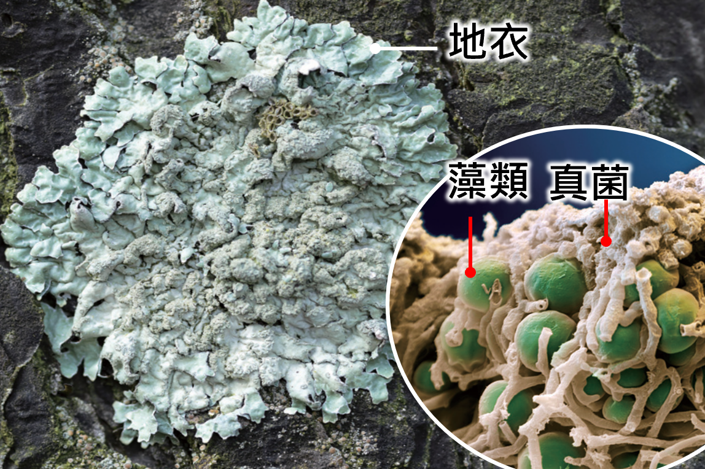

學習內容
真菌不能行光合作用，必須從外界獲得養分。有些真菌會分解枯枝落葉和生物遺體， 屬於分解者；有些真菌會寄生在其他生物身上；也有些真菌會和其他生物共生。 真菌的繁殖方式很多，酵母菌常用出芽生殖，黴菌和蕈類常以孢子繁殖。
- 分解：分解枯枝落葉、動植物遺體
- 寄生：從活的生物身上取得養分
- 共生：與其他生物互相幫助
- 酵母菌：常用出芽生殖
- 黴菌、蕈類：常用孢子繁殖
1
任務一：生活方式配對
請依照圖片與情境，判斷是真菌的分解、寄生還是共生。

情境 A真菌長在枯木上，分解木材中的養分。

情境 B真菌寄生在生物身上，使生物生病。

情境 C真菌和藻類一起生活，互相幫助。
共生
分解
寄生
2
任務二：繁殖方式分類
先點選下方卡片，再點上方正確區域，把真菌代表放到正確的繁殖方式。
出芽生殖
把會出芽生殖的真菌放這裡
孢子繁殖
把會孢子繁殖的真菌放這裡
酵母菌
黴菌
蕈類
3
任務三：孢子繁殖流程排序
依照真菌進行孢子繁殖的過程，把步驟排成正確順序。
第 1 步
第 2 步
第 3 步
第 4 步
孢子散播
長成新的真菌
產生孢子
落到適合環境
4
任務四：觀念統整判斷
請點選所有正確敘述。
酵母菌常用出芽生殖。
黴菌和蕈類常以孢子繁殖。
真菌不能行光合作用，需從外界取得養分。
所有真菌都會寄生在活的生物身上。
請先完成本頁所有任務，並全部答對，才能進入下一頁。
下一頁 →